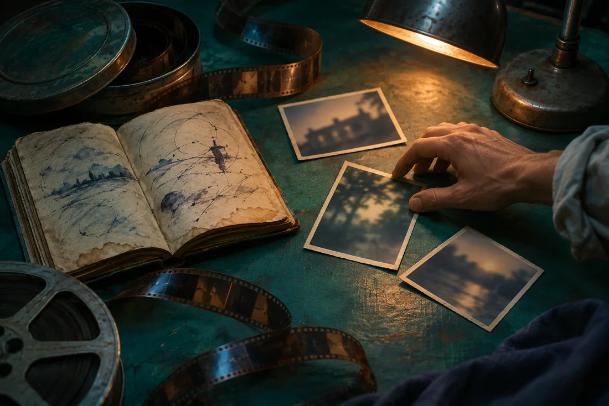
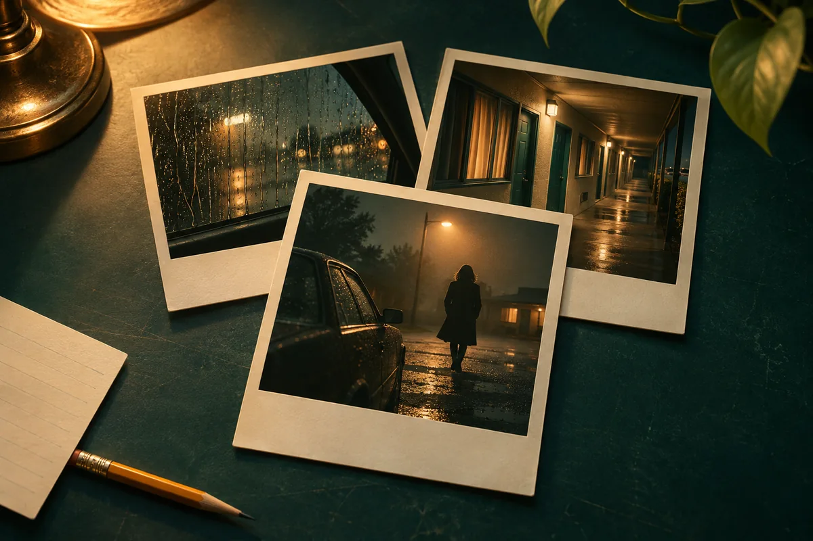

CineScene
Know the scene? Let’s find the film.
Describe a scene to find a film or series, even without its name.Find a film from a scene description
Describe a line of dialogue, an action, or a setting. CineScene compares the meaning of your description with stories and scenes in its collection.
You do not need the title or the exact words. Start with what you remember, and add a distinctive detail if several films sound similar. You can search in Persian or English.
A man who cannot form new memories tattoos clues on his body and uses Polaroid photographs to investigate his wife's murder.
In this example, the tattoos and instant photographs are the clues that point to Memento.
Try the search
Add a film to your collection
Choose a film file in Studio and select Add to collection. CineScene goes through the film and adds it to your collection so it can show up in Search.
When the film is ready, describe a scene from it. You can find the film and, when a scene matches, open that part of the video.
Add a film in Studio- Choose the film fileFor several films, you can enter the folder path in Studio. Subtitles are optional and help with dialogue searches.
- Let CineScene go through the filmIt finds where scenes begin and end, then saves useful details such as images and any available dialogue.
- Find the film in SearchWhen Studio confirms the film was added, go to Search and describe a scene from it.
See why a result matches
A title is just the start. Open a result to see what connects your description to the film or episode: a detail in its story, a matching moment in the video, or both.
A story match helps you recognize the title. A timed scene match can also take you to the moment you were looking for.
Story match
If the film or episode has a written summary, CineScene can show the passage that best fits your description. Read it to see whether the details match what you remember.
For example, the tattoos and instant photos in the Memento search come from the story summary. They point to the film, not to a specific minute.

Timed scene match
When you add a video in Studio, CineScene records where each section begins and ends. If your description matches a section, the result can show that time range and open the video at its start.
For example, search for a moment in a film you added. When a scene matches, you can watch it without scrubbing through the whole film.
View a recorded scene test
In an eight-second silent clip, a description of the change from a flower to a building matched scene 2, starting at 00:04.000.